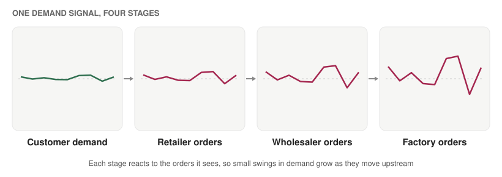

What happens to an optimal plan when the demand forecast is wrong?
A supply chain is a long series of decisions made before the facts are in: how much to order, where to stock it, when to ship. Each decision is easy to optimise if demand is known. Demand is never known, so the real question is how good a plan stays when the numbers behind it are wrong. This post goes through the standard answers and the research behind them.
1. The newsvendor: the smallest useful model
A vendor must choose how many newspapers to stock before knowing how many will sell. Order too few and each missing sale costs the shortage cost, cu. Order too many and each leftover copy costs the overage cost, co. The classical result, traced to Arrow, Harris and Marschak (1951), is that the best order quantity is the point where the chance of demand falling below it equals cu / (cu + co). The answer depends on the whole demand distribution, not only its average.

Herbert Scarf asked what to do when even the distribution is unknown and only its mean and variance are available. His 1958 min-max solution gives a quantity that protects against the worst distribution consistent with those two numbers.
2. Forecast first, optimise second, and why that can go wrong
The usual workflow is predict-then-optimise: fit a demand model, treat its output as truth, and optimise against it. The trouble is that a model with the lowest forecast error is not necessarily the one that leads to the cheapest decisions, because some errors are costlier than others. Adam Elmachtoub and Paul Grigas formalised this in “Smart Predict, then Optimize” and proposed training the predictor on decision cost rather than prediction error.
A related line goes straight from data to decisions. Gah-Yi Ban and Cynthia Rudin’s “big data newsvendor” learns the order quantity directly from features such as season and price, and Dimitris Bertsimas and Nathan Kallus’s work on prescriptive analytics lays out the broader approach.
3. Planning for being wrong
- Robust optimisation. Bertsimas and Melvyn Sim’s “price of robustness” lets you choose how many uncertain parameters can go against you at once, trading a little average performance for protection in bad cases.
- Sampling-based policies. Retsef Levi, Robin Roundy and David Shmoys showed that policies computed from a modest sample of demand observations can come with provable guarantees of being near-optimal for stochastic inventory problems.
- Distribution-free policies. Scarf’s approach, above, asks for very little knowledge of demand.
4. Why small errors travel
Supply chains have a second problem: errors do not stay where they start. Hau Lee, V. Padmanabhan and Seungjin Whang described the bullwhip effect, in which each stage reacts to the orders it receives, so small swings in consumer demand become large swings in factory orders. Demand forecasting by each stage, order batching and price changes all feed it.

Where my own work fits
The same structure appears in a preprint I wrote, mentored by Prof. Devansh Jalota: Estimation Robustness of Static Congestion Pricing Under Learned Demand. A toll that stays fixed through the day is a decision made from an estimate of demand, so any error in the estimate is carried into the price. The question is how much the decision suffers when demand has been learned from data, which is the supply chain question in a road network. A related allocation question appears in my work on LLM agent pipelines, where limited checking effort has to be spread across tools whose quality may be degrading unseen.
What to take away
- Judge a forecast by the decisions it leads to, not only by its error.
- Report a distribution or an interval alongside every point forecast, because the best decision depends on it.
- Test a plan against forecasts that are wrong in realistic ways before trusting it.
Further reading
- Arrow, K. J., Harris, T. and Marschak, J. (1951). Optimal inventory policy. Econometrica.
- Scarf, H. (1958). A min-max solution of an inventory problem. In Studies in the Mathematical Theory of Inventory and Production.
- Elmachtoub, A. N. and Grigas, P. (2022). Smart “Predict, then Optimize”. Management Science.
- Ban, G.-Y. and Rudin, C. (2019). The big data newsvendor: practical insights from machine learning. Operations Research.
- Bertsimas, D. and Kallus, N. (2020). From predictive to prescriptive analytics. Management Science.
- Bertsimas, D. and Sim, M. (2004). The price of robustness. Operations Research.
- Levi, R., Roundy, R. O. and Shmoys, D. B. (2007). Provably near-optimal sampling-based policies for stochastic inventory control models. Mathematics of Operations Research.
- Lee, H. L., Padmanabhan, V. and Whang, S. (1997). Information distortion in a supply chain: the bullwhip effect. Management Science.
Appendix: figure credits
- Figures 1 and 2 are my own schematic diagrams, drawn to illustrate the ideas above. They are not data from the cited studies.